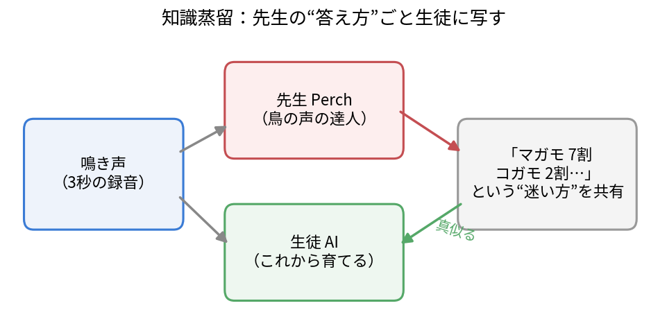
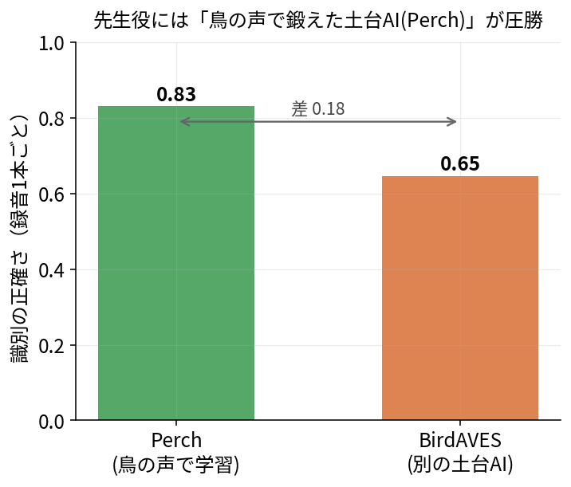
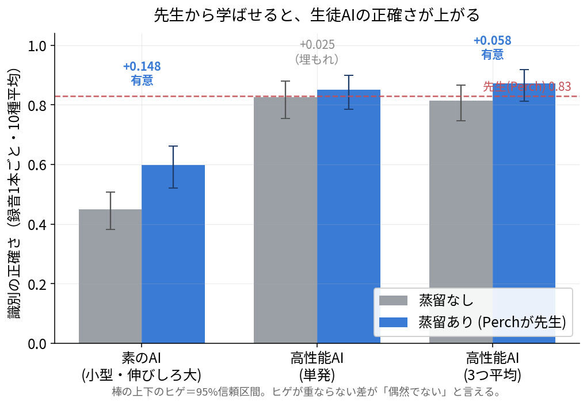
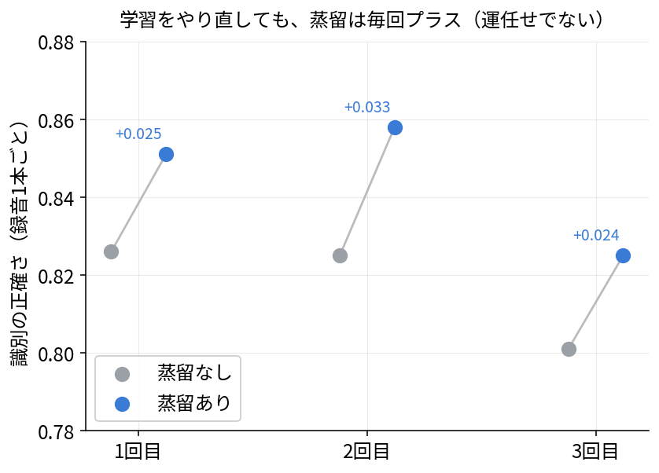
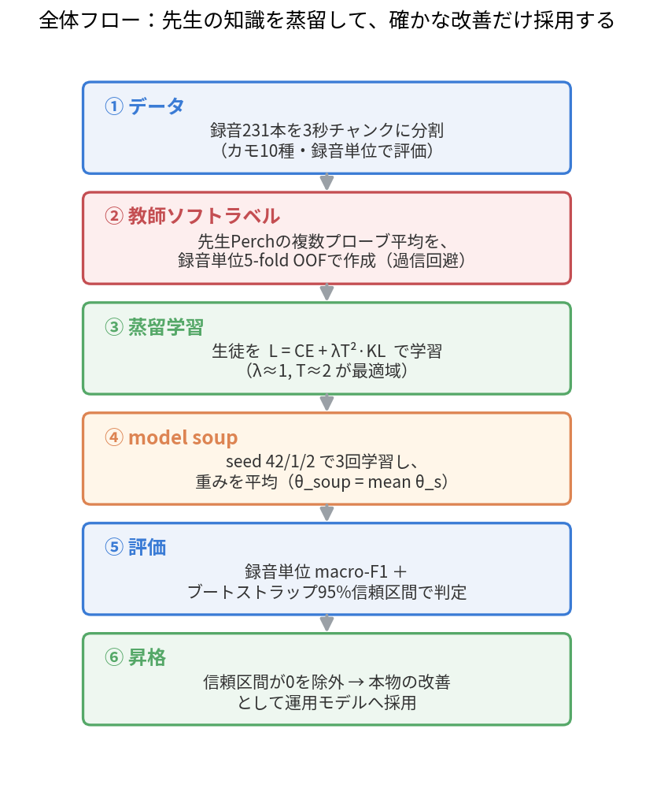

このノートの要点（先に結論）
- 鳴き声からカモ10種を見分けるAIを、「鳥の声の達人AI（Perch）」を先生役にして学ばせ直すと、正確さが上がった。
- 伸びしろの大きい小型AIでは、正確さが 0.45 → 0.60 へ明確に向上。偶然では説明できない差だと統計的に確認できた。
- すでに高性能なAIでも、学習を3回やり直し・結果を平均すると 0.81 → 0.87 に。こちらも統計的に確かな上積み。
- 「たまたま良い結果が出ただけでは？」を避けるため、判定はすべて信頼区間付きで行いました。
背景なぜ鳴き声でカモを見分けたいのか
水辺に置いたレコーダーが拾う鳴き声から、その場にいる鳥の種類を自動で判別できれば、人が常に張り付かなくても生息状況をモニタリングできます。カモの仲間はその有望な対象ですが、近縁の種どうしは鳴き声がよく似ていて、機械にとっても人にとっても聞き分けが難しい相手です。
今回扱うのは、3秒ごとに区切った鳴き声からカモ10種を当てるタスク。手元の評価用データは録音231本ぶんと、それほど多くありません。「データが少ない・種が似ている」という、フィールドではおなじみの厳しい条件です。
行き詰まり「同じやり方の磨き込み」では頭打ちだった
最初のAIは、録音1本ごとに10種を当てる正確さで 0.83 前後。ここから設定を細かく調整しても、ほとんど数字が動かなくなりました。同じ土台のうえで磨き方を変えるアプローチは、すでに限界に来ていたのです。
そこで発想を変えます。「別の知識を外から注ぎ込めないか？」——これが今回の主役、知識蒸留（ちしきじょうりゅう）です。
アイデア「達人の答え方」ごと写し取る — 知識蒸留
知識蒸留とは、すでに賢いAI（先生）の判断のしかたを、これから育てるAI（生徒）に真似させる手法です。ポイントは、先生の答えを「正解か不正解か」だけでなく、「マガモ7割・コガモ2割…」といった“迷い方”の配分ごと生徒に伝えるところ。この迷いの配分には、似た種どうしの微妙な近さといった、正解ラベルだけでは伝わらない情報が詰まっています。

もう少しだけ正確に：蒸留の式
生徒の学習は、ふつうの「正解との照合」に、先生のソフトラベルを真似る項を足した形になります。生徒の損失（小さいほど良い）は：
蒸留の損失関数
$$\mathcal{L} \;=\; \underbrace{\mathrm{CE}\!\left(y,\,p_S\right)}_{\text{正解との照合}} \;+\; \lambda\,T^{2}\,\underbrace{\mathrm{KL}\!\left(p_T^{(T)}\,\middle\|\,p_S^{(T)}\right)}_{\text{先生の“迷い方”を真似る}}$$ここで温度付きの確率分布 \(p^{(T)}\) は、AIの出力スコア \(z\) を温度 \(T\) で割ってから正規化したものです：
- \(\mathrm{CE}\)：交差エントロピー。正解ラベル \(y\) とのふつうの「当たり/外れ」の学習。
- \(\mathrm{KL}(\cdot\,\|\,\cdot)\)：KLダイバージェンス。先生の確率分布 \(p_T\) と生徒の \(p_S\) のズレ。これを小さくする＝先生の答え方に寄せる。
- \(T\)：温度。大きいほど確信度の山がなだらかになり、「マガモ寄りだがコガモの可能性も…」という迷い方の情報が強調される。
- \(\lambda\)：蒸留項の重み。今回は \(\lambda\approx 1,\ T\approx 2\) が最も効く帯だと、ハイパラ探索で確かめました。
先生役には Perch という、大量の鳥の鳴き声で鍛えられた“土台AI”を選びました。なぜ Perch なのか——他の土台AIと並べて比べた結果がこちらです。

結果蒸留は効いた——3人の生徒で確かめる
蒸留が「本当に効く」のかを見極めるため、性質の違う3人の生徒AIで、蒸留なしと蒸留ありを同条件で比べました。

① 伸びしろの大きい小型AI：はっきり効いた
あえて事前学習のない小さなAIを生徒にすると、正確さは 0.45 → 0.60（+0.148）。信頼区間が重ならず、統計的に「効いた」と断言できる結果です。先生との差を約4割ぶん埋めました。これが、「Perch を先生にした蒸留は本当に効く」を初めて確かめた瞬間です。
② すでに高性能なAI：効いてはいるが、単発では埋もれる
もともと強いAIだと 0.826 → 0.851（+0.025）。上向きですが、もう天井近くで伸びしろが小さく、231本の録音という解像度では「偶然の範囲」と区別しきれませんでした。方向は同じ・効果は本物。ただ小さくて埋もれた、というわけです。
「埋もれた」差をどう確かめるか。 ②の効果が本物かどうかを、学習を3回やり直して検証しました。下のとおり毎回プラス。運任せの当たりではなく、安定した上積みだと分かります。

③ 3回の結果を平均すると、過去最高に
ここで使うのが model soup。学習し直した \(S=3\) 個のモデルの重み（パラメータ）を平均して1つにまとめます：
こうして 3回ぶんを平均してならすと 0.813 → 0.871（+0.058）。今度は信頼区間が重ならず、高性能AIでも蒸留の効果を統計的に確かなものとして確認できました。0.871 はこのプロジェクトの過去最高で、先生Perch（0.83）も大きく上回ります。良い生徒は、先生を超えるのです。
| 生徒AI | 蒸留なし | 蒸留あり | 差 | 判定 |
|---|---|---|---|---|
| 小型AI（伸びしろ大） | 0.450 | 0.598 | +0.148 | 本物の差 |
| 高性能AI（単発） | 0.826 | 0.851 | +0.025 | 埋もれた |
| 高性能AI（3回平均） | 0.813 | 0.871 | +0.058 | 本物の差 |
用語このノートに出てきた言葉
- 知識蒸留knowledge distillation
- 賢い「先生」AIの判断のしかたを「生徒」AIに真似させる手法。正解だけでなく確信度の配分（ソフトラベル）を伝えるのが肝。
- ソフトラベルsoft target
- 「マガモ7割・コガモ2割…」のように、各種への確信度を確率で表した教師信号。0/1のハードラベルより情報が多い。
- 温度temperature, \(T\)
- 確信度の山のなだらかさを調整する数。大きいほど迷い方が強調される。今回は \(T\approx 2\)。
- 交差エントロピー / KLダイバージェンスcross-entropy / KL divergence
- 前者は「正解とどれだけ合っているか」、後者は「2つの確率分布がどれだけズレているか」を測る量。蒸留の損失はこの2つの足し算。
- 土台AI（基盤モデル）foundation model
- 大量データで前もって鍛えた汎用AI。今回の先生 Perch は鳥の鳴き声で鍛えた土台AI。
- OOF（アウト・オブ・フォールド）out-of-fold
- データを5分割し、各データの教師ラベルを「そのデータを学習に使っていないモデル」から作る作法。先生の過信（カンニング）を防ぐ。
- macro-F1（録音単位）macro-averaged F1
- 各種ごとの当て具合（適合率 \(P_k\) と再現率 \(R_k\) の調和平均）を、種をまたいで平均した指標。少数種も等しく重みづけする。\(K=10\) 種：
$$\text{macro-F1} \;=\; \frac{1}{K}\sum_{k=1}^{K}\frac{2\,P_k R_k}{P_k+R_k}$$
- ブートストラップ信頼区間bootstrap confidence interval
- 録音を単位にデータを再抽出して何度も測り直し、数字のばらつき幅を見積もる方法。区間が0をまたがない差＝偶然では説明できない「本物の差」と判断する。
- model soupweight averaging
- 学習し直した複数モデルの重みそのものを平均して1つにする手法。運の良し悪しをならし、安定して強いモデルにする。
まとめ分かったこと・残った課題
確かめられたこと：「鳥の声の達人AIを先生にした知識蒸留」は、鳴き声分類AIを強くする信頼できる手段だと統計的に確定した。実用にいちばん向くのは、もともと高性能なAIに蒸留した版（録音1本ごとの正確さ 0.87）。
残った課題：評価に使える録音がまだ少なく、小さな差は見極めにくい——録音データを増やすことがいちばんの近道。また、ごく近縁な一部の種は先生Perch自身も学んでおらず、蒸留だけでは聞き分けが割れない。ここはデータと種知識の両面からの工夫が要る。
フィールドの音響モニタリングでは「データが少ない・種が似ている」がつきもの。そんな状況でも、すでにある“達人AI”の知識を借りることで、手元のモデルを底上げできる——というのが、このノートのいちばんの持ち帰りです。
全体フローここまでの流れを1枚に
最後に、このノートでたどった工程を通しで並べます。録音を分割し、先生からソフトラベルを作り、生徒を蒸留学習し、複数回をならし、信頼区間で「本物の改善だけ」を採用する——という一連の流れです。

ひとことで：「鳥の声の達人AIを先生に、迷い方ごと生徒へ蒸留する」。効果は小型AIで 0.45→0.60、高性能AIでも 3回平均で 0.81→0.87。どちらも信頼区間で裏づけた本物の改善でした。